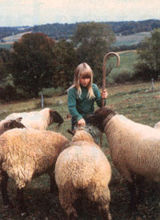
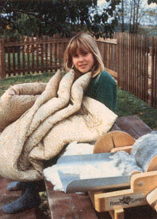

Mother's children
MOTHER feels strongly that youths can be creative "doers," working toward more ecological and self-reliant lifestyles . . . whether their tasks be raising chickens on a farm or maintaining rooftop container gardens in the city. To support the endeavors of our often overlooked "underage" citizens, we're glad to publish well-written articles from younger children and teenagers concerning projects they've undertaken. However, we recommend that all young authors query (that is, send us a letter telling about the story they'd like to do) before writing a full article. Address inquiries to Mother's Children, THE Mother Earth News, 105 Stoney Mountain Rd., Hendersonville, NC 28791.
Raising sheep has been the great joy of my life. Who wouldn't enjoy cuddly, cute lambs in the spring and lovable ewes all year round? It all started for me at age three when we first moved to the farmstead and Papa got me one ewe (a ewe is a female sheep). Her name was Fluff; my job was to feed her. Now I am eleven and have nine Suffolk ewes and one huge ram (male sheep) to care for.
It's simply wonderful to work and play with sheep and adorable lambs, but I started to get real satisfaction from tending a flock two years ago, when we began to make comforters from the fleeces and sell them to other folks. The comforters are fun to make, we earn $30 to $60 profit on each one, and we've really put our flock "to work"!
I raise a breed of sheep known as Suffolk. I tried some Finns and Merinos for a while, but they weren't any better than the Suffolks, so I sold them. (The Merinos were supposed to have good wool, but it turned out to be awful for making comforters! It's best for spinning.)
Sheep can graze for their food whenever grass is growing. In winter, though, I feed my flock two times a day with horse feed (each ewe gets about one-quarter pound per day) and mixed timothy-alfalfa hay. I check their water twice a day, except when the temperature is below 15°F. Then I check it three times a day.
I trim the hooves of all my sheep at least twice a year. To keep the parasite population down in my flock, I rotate my animals to different pastures on a regular basis and worm the sheep each spring and fall. Every three years I cull the old ram and raise up a young one to become the flock's sire for the next three years. I also cull two or three older ewes every year and replace them with good ewe lambs.
My ram runs with the flock, and the lambs are born anytime between January and May. During this time I check the ewes daily for signs of lambing. Some mornings I am happily surprised to find a ewe with her newborn lamb. I then put the pair in a special lambing stall for three or four days so that the mother can bond with her lamb.
Occasionally ewes have trouble giving birth. Last year, one of my ewes had a lot of trouble because the lamb's front leg was bent backward under its body. My sister and I managed to pull the leg forward and into its right position. It took a long time, and whenever the ewe had a contraction (a squeezing of the muscles that push a baby out), our hands nearly got smashed. It worked, though. The ewe and the lamb both lived.
One of the most exciting and enjoyable things about having sheep is raising orphan lambs. Last year one of my ewes had triplets! One of them was very tiny. She weighed only two pounds, and a normal-size lamb weighs five pounds or more. She couldn't even stand up.
I brought her into the house. At night we put her in a wooden box, and she slept in my room. Sometimes she even slept in my bed! Her cries sounded like a new baby in the house. We kept her inside for two weeks and fed her from a bottle as often as she wanted for the first week. Then we fed her less and less often until she was a month old. At that time, we let her nurse from a doe (mother) goat about three times a day for another month.
Now she is very healthy and is back with the rest of the flock. Because she was with people so much, though, she likes people more than she likes other sheep. And because she ran with a kid goat for company, she acts like a goat instead of a sheep! She chews on people's clothing and jumps on fences. Today, when my brother Dan and I went down to the pasture, she twirled around and butted him!
We shear (cut the wool off) our sheep in late May or early June, depending on the weather. I hold the sheep down on a tarp one at a time while my father clips the wool with hand shears. We keep a can of disinfectant with us and spray any accidental cuts on the sheep.
The next thing we do is wash the wool. We fill a big twenty- gallon cast-iron kettle with water. put the wool in with some Era detergent, and let it heat over an open fire for two hours. We dunk the wool every few minutes with a bathroom plunger to help get all of the dirt out and don't let the water temperature get over 140°F.
After that we fill another tub with cold water and rinse the wool. We run the wool through a hand wringer that's attached to a wooden fence post and then hang it over a picket fence to dry for a few days. Next, we lay a newspaper on our table or our laps and go through the wool to pick out all the burrs, grain, and hay that might have gotten into it. "Picking" the wool like this makes quite a mess, so we do this job outside. Then we put the wool into a clean feed sack.
We have a hand-operated carding machine (we bought it by mail order for $180) that we use to make the wool into batts. We feed the wool into the machine and crank the handle until out comes a nice thick batt. We store these wool mats in a cedar chest to protect them from moths. They stay there until fall or winter when we have more time to make the comforters.
To start off, my mother cuts and fits together two big pieces of cheesecloth to make one piece that's just as wide and twice as long as she wants the comforter to be. It takes 13-1/2 yards of cheesecloth to make a king-size comforter and 12-1/2 yards for a queen-size one. Ten yards of cheesecloth will do for a full- or twin-size comforter.
When that's done, she and I lay about four pounds of the wool batts evenly over half of the cheesecloth and then lift the other half up onto the wool so there's cloth over and under the wool. We then stitch up the three open sides of the cheesecloth so the wool is completely enclosed in its cloth case.
The next step is to choose the cover fabric. We use cotton fabric, usually one with a print. If you are making a comforter to sell, your customer might want to supply the material. You'll need about the same amount of fabric as you did cheesecloth.
We trim the fabric to the same size as the cheesecloth, with an extra half-inch all around to allow for seams. Then we sew it along three sides to make an open case. Next, we slip the cheesecloth-covered batting into this case and add snaps, a zipper, or Velcro-type fastening to close its open side.
Finally, we tie off the comforter with embroidery thread or good yarn. To do so, we make a stitch through the top layer of cover, down through the batting and bottom layer of cover, then turn and push the needle back up through the top. That leaves two ends of yarn poking out the top. We cut these ends to about two inches long and tie them snugly together so that the fabric pushes up a little around the knot. This gives the comforter a quilted look. We make these ties every six to ten inches over the entire comforter.
Then we're done!
A comforter is meant to be slept under, not on top of! If you do sleep on it, you'll mash down the batting, and it'll lose some of its insulating value. When you're not using your comforter, store it in a cedar chest to keep moths away from it.
When the comforter is dirty, cut the thread ties and remove the batting. The cover can be washed in a washing machine, but the batting should be left in its cheesecloth casing and washed gently by hand in the bathtub with cold water and mild soap. Rinse the wool case with cold water, gently squeeze the water out, and then hang it across the clothesline to dry. (It's best to do this on a warm, sunny day.)
If the batting gets matted down over the years, you can recard it to fluff it back up. Treated with care, your comforter will last a long time. Some of them last for generations!
You can advertise comforters you want to sell by talking about them to friends and putting notices on store bulletin boards and in your local newspaper. We sell a twin-size comforter for around $100. You can figure out your own price by adding all of your costs together and then adding in something more for your labor.
If you want to learn how to raise sheep, I recommend using Paula Simmons' Raising Sheep the Modern Way and Margaret Bradbury's The Shepherd's Guidebook as reference books. [EDITOR'S NOTE: Raising Sheep the Modern Way is available for $7.95 plus $2.00 shipping and handling from Garden Way Publishing, Schoolhouse Rd., Pownal, VT 05261. The Shepherd's Guidebook is available for $12.95 prepaid from Rodale Books, 33 E. Minor St., Emmaus, PA 18049.]
But you can make a comforter even if you don't have sheep. Just go to the nearest sheep farm in the early spring before the flock is shorn and ask the shepherd to save a fleece or two for you. Generally, ten pounds of fleece will make five pounds of carded wool after processing, enough for one comforter.
One thing's for sure, I bet you don't sell your first homemade comforter. Once you find out how warm you feel snuggling under it in winter, you'll never want to give it up!
|
 |
 |
|